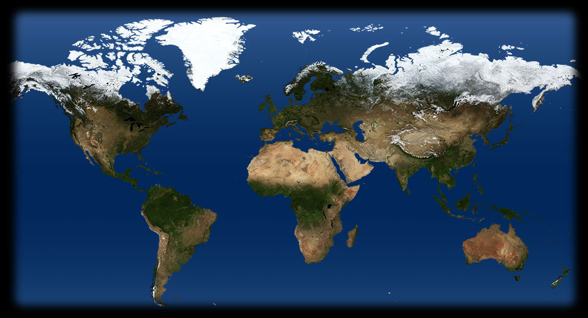
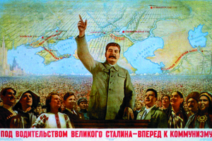
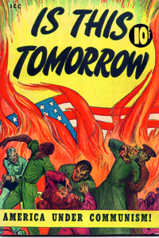
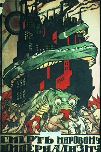

Lezione 20La guerra fredda

-

STALIN
Un'efficace immagine propagandistica di Joszif Stalin, che mette in risalto le ambizioni di leadership dell'Unione Sovietica e il consenso che circonda il suo capo.

USA
La propaganda anticomunista americana ricorre ad un linguaggio fumettistico per demonizzare l'avversario: il comunismo sovietico in questo manifesto degli anni Cinquanta viene dipinto a tinte fosche e minacciose come portatore di rovina e discordia.
URSS
Anche la propaganda sovietica fa ricorso all'immaginario fantastico per screditare il nemico: il capitalismo è qui raffigurato come uno spaventoso mostro serpentiforme che aggredisce il proletariato avvolgendo tra le sue spire le rovine di una città incendiata.